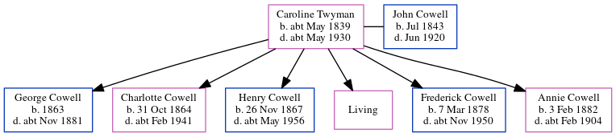

Caroline Cowell (née Twyman) cMay 1839 - c1930
[ Home ] | [ Calendar ] | [ Surnames Index ] | [ Census Index ] | [ Family History ]Caroline Twyman, the wife of John Cowell (the three times great-uncle of Nigel Horne), was born in Preston, Kent, England c. May 18391,2,3,4,5,6,7,8,9,10, was baptized in Preston, Wingham, Kent, England on Jun 13, 1839 and married John (a laborer with whom she had 6 children: George William, Charlotte Priscilla Ann, Henry John, Emily Jane, Frederick Troward and Annie Mary, along with 1 surviving child) at St Andrews, Wickhambreaux, Kent, England on Aug 30, 186212.
During her life, she was living at her birthplace in 18411; in Wickhambreaux in 18612; at London Road, Ditton, Kent on Apr 2, 187114; at Orchard Terrace, New Hythe Road, East Malling, Kent on Apr 3, 188113; in East Malling, Kent, England in 18915; on Lunsford Lane in East Malling on Apr 5, 189115; and in East Malling in 19016 and on Apr 2, 19117.
She died c. May 1930 in Malling, Kent, England9,11.
Children
- George William was born in 1863
- Charlotte Priscilla Ann was born on Oct 31, 1864
- Henry John was born on Nov 26, 1867
- Frederick Troward was born on Mar 7, 1878
- Annie Mary was born on Feb 3, 1882
Citations
- 1841 England Census Online publication - Provo, UT, USA: The Generations Network, Inc., 2006.Original data - Census Returns of England and Wales, 1841. Kew, Surrey, England: The National Archives of the UK (TNA): Public Record Office (PRO), 1841. Data imaged from the National
- 1861 England Census Online publication - Provo, UT, USA: The Generations Network, Inc., 2005.Original data - Census Returns of England and Wales, 1861. Kew, Surrey, England: The National Archives of the UK (TNA): Public Record Office (PRO), 1861. Data imaged from the National
- 1871 England Census Online publication - Provo, UT, USA: The Generations Network, Inc., 2004.Original data - Census Returns of England and Wales, 1871. Kew, Surrey, England: The National Archives of the UK (TNA): Public Record Office (PRO), 1871. Data imaged from the National
- 1881 England Census Online publication - Provo, UT, USA: The Generations Network, Inc., 2004. 1881 British Isles Census Index provided by The Church of Jesus Christ of Latter-day Saints © Copyright 1999 Intellectual Reserve, Inc. All rights reserved. All use is subject to the
- 1891 England Census Online publication - Provo, UT, USA: The Generations Network, Inc., 2005.Original data - Census Returns of England and Wales, 1891. Kew, Surrey, England: The National Archives of the UK (TNA): Public Record Office (PRO), 1891. Data imaged from The National (Relation to Head of House: Mother)
- 1901 England Census Online publication - Provo, UT, USA: The Generations Network, Inc., 2005.Original data - Census Returns of England and Wales, 1901. Kew, Surrey, England: The National Archives of the UK (TNA): Public Record Office (PRO), 1901. Data imaged from the National (Relation to Head of House: Wife)
- 1911 England Census Online publication - Provo, UT, USA: Ancestry.com Operations, Inc., 2011.Original data - Census Returns of England and Wales, 1911. Kew, Surrey, England: The National Archives of the UK (TNA), 1911. Data imaged from the National Archives, London, England.
- England & Wales births 1837-2006 - Findmypast
- England & Wales, Death Index: 1984-2005 Online publication - Provo, UT, USA: The Generations Network, Inc., 2007.Original data - General Register Office. England and Wales Civil Registration Indexes. London, England: General Register Office. © Crown copyright. Published by permission of the Cont
- England & Wales, FreeBMD Birth Index, 1837-1915 Online publication - Provo, UT, USA: The Generations Network, Inc., 2006.Original data - General Register Office. England and Wales Civil Registration Indexes. London, England: General Register Office. © Crown copyright. Published by permission of the Cont
- England & Wales deaths 1837-2007 - Findmypast
- KFHS CD22
- 1881 England, Wales & Scotland Census - Findmypast (was age 41 and the wife of the head of the household)
- 1871 England, Wales & Scotland Census - Findmypast (was age 32 and the wife of the head of the household)
- 1891 England, Wales & Scotland Census - Findmypast (was age 50 and the mother of the head of the household)
- 1911 Census for England & Wales - Findmypast (was age 72 and the wife of the head of the household)
Media
England & Wales births 1837-2006 - BMD/B/1839/2/LZ/001323/027
England & Wales deaths 1837-2007 - BMD/D/1930/2/AZ/000176/125
1881 England, Wales & Scotland Census - GBC/1881/0004492700
1891 England, Wales & Scotland Census - GBC/1891/0005472924
1911 Census for England & Wales - GBC/1911/RG14/03970/0103/2
England & Wales marriages 1837-2008 - BMD/M/1862/3/AZ/001909/017
Canterbury Marriages - GBPRS/CANT/M/97033441/2
England Births & Baptisms 1538-1975 - R_884599095
Kent Baptisms - GBPRS/CANT/B/96542966
Family Tree
Generated by ged2site. Last updated on Jun 11, 2024